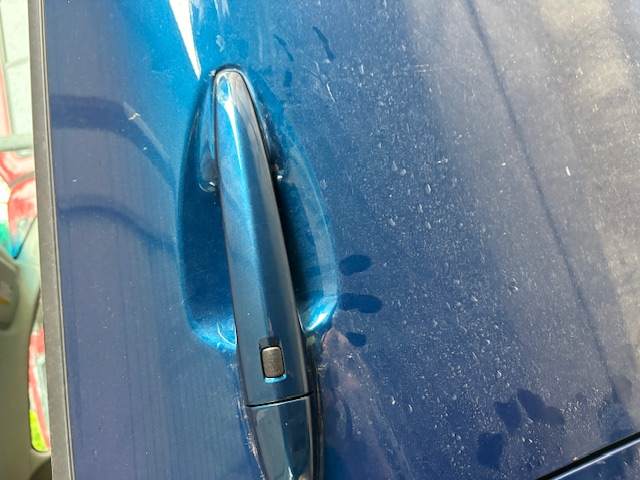

Once you have the new door handle installed, the inner door panel back in place, and the window bolted into the window track, it is time to test the new part. Reconnect the door panel wiring to the first connector you disconnected. Turn the key on without starting the vehicle. You should be able to push the button, and it should operate normally. If it does not, you will want to check the wiring and make sure that everything is connected properly. If it does operate normally, then you have successfully replaced your new outer door handle and can now enjoy your newly repaired vehicle.
All that is left is to finish the reassembly process in the reverse order of the disassembly process. You will want to make sure that you replace and tighten all the bolts and screws that you removed during the repair process. Make sure that you also reconnect all the wiring.

If you would like to leave a comment on how helpful you found this guide,
or if you would like to see another one, please click the link to fill out
the form provided.